Specialized Treatment Center
특화진료센터
thoughtful and appropriate treatment. "
Special
특화진료센터 .
정형외과센터
경험이 많은 외과 전공의가 면밀하게 진단하고 신중히 진료합니다.
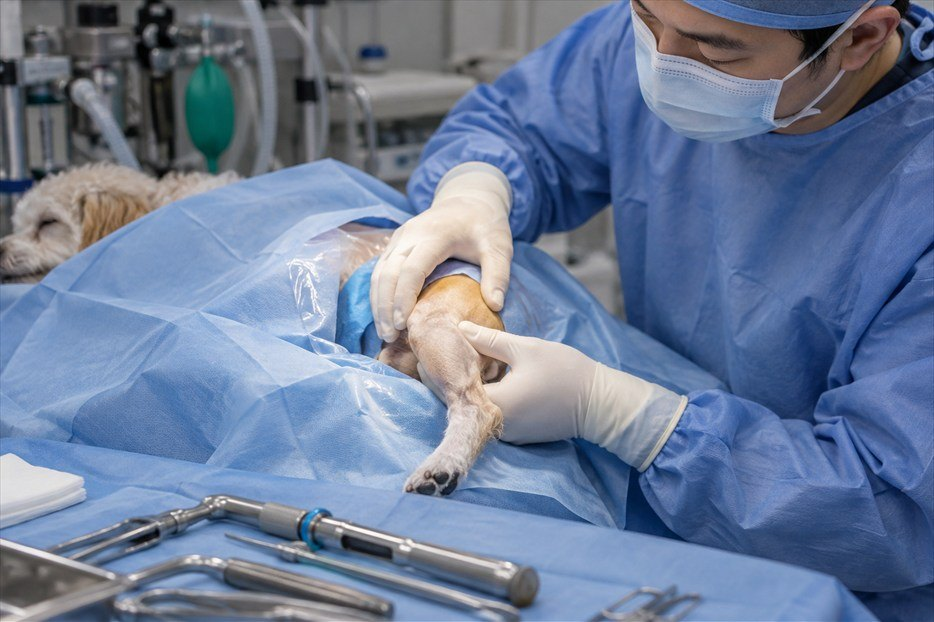
정형외과센터란?
온율담 정형외과센터는 반려동물의 뼈와 관절 질환을 진단하고 치료합니다.
강아지에게 흔하게 발생하는 슬개골 탈구부터 고관절 질환, 십자인대 파열,
외상으로 인한 골절 등 일반적인 정형 질환부터 고난도 질환을 명확하게 진단하여
수술/재활 치료를 시행하고 있습니다.
수술 종류
-
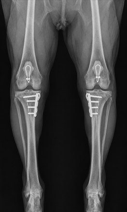
슬개골수술
-
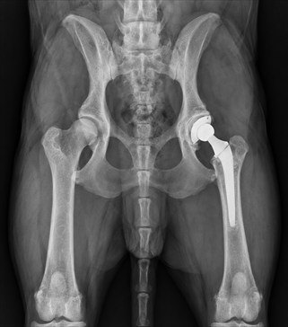
THR
-
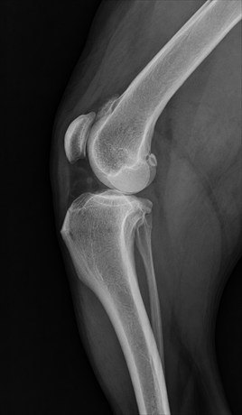
십자인대
-
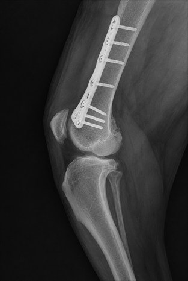
DFO
-
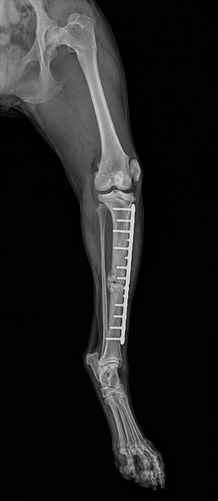
골절
뇌·신경센터
뇌신경 질환은 수술, 조기 진단과 빠른 치료가 중요합니다.
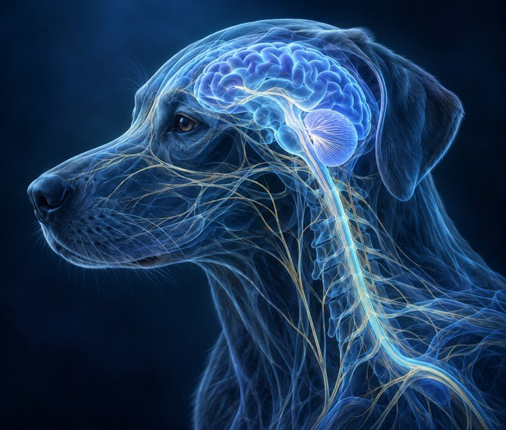
뇌신경센터센터란?
반려동물의 뇌와 척수, 또는 말초 신경 등 신경계의 이상이 생기면
발작, 경련, 실명, 보행이상, 사지마비 혹은 후지마비, 통증, 비틀거림, 사경 등 다양한 신경증상을 보이게 됩니다.
뇌신경센터에서는 전문적인 검사를 거쳐 신경계 질환에 대한 평가와 진단을 하고 그를 토대로 수술적 치료, 내과적 치료, 재활치료 등이 시행되고 있습니다.
수술 종류
-
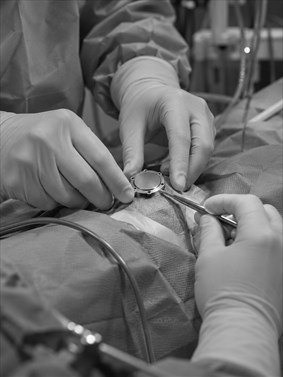
COMS
-
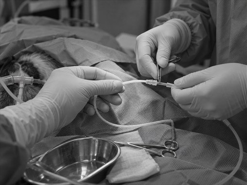
VP션트
-
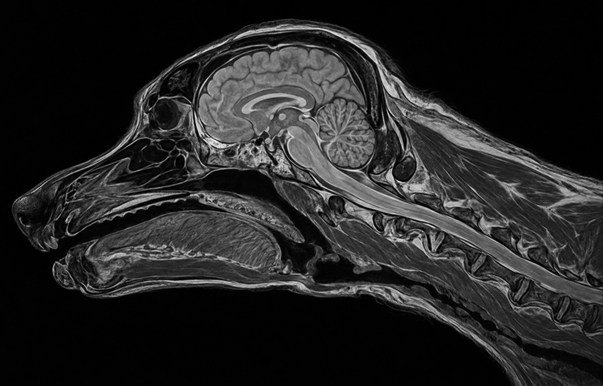
AAI
-
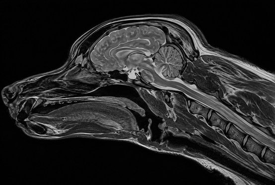
AOO
-
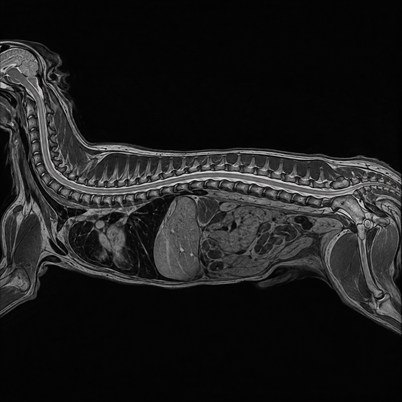
디스크
구강·치과센터
최상의 의료 서비스를 전하기 위해 온 힘을 기울이고 있습니다.
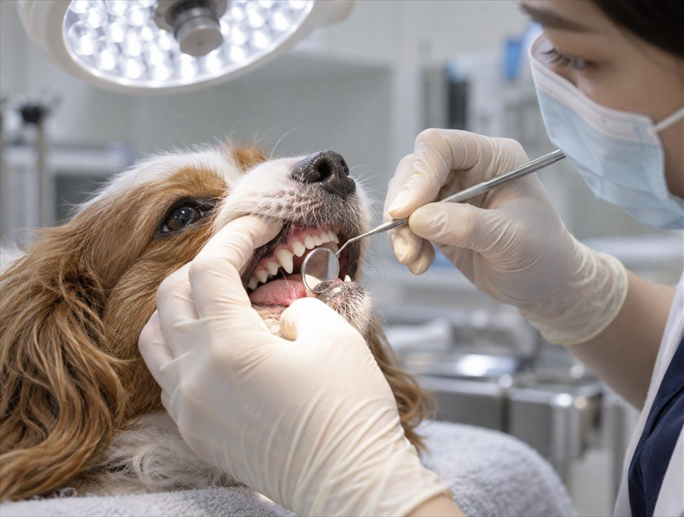
구강·치과센터란?
치과 동물 특성상 통증이나 고통을 표현하지 못하고 오히려 감추려는 특성으로 인해 고통을 받고 있는 동물들의 치과 질환을 적절한 시기에 진단하여 각 질병 단계에 적합한 치료를 거쳐 반려동물들의 구강 통증을 없애고 그 기능을 회복하는데 역점을 두고 있습니다. 안전마취 시스템과 치과전용 수술실에서 레진/신경치료/크라운/발치 등 전문적인 치과 치료가 할 수 있습니다.
치료 종류
-
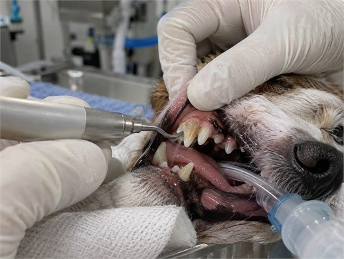
스케일링
-
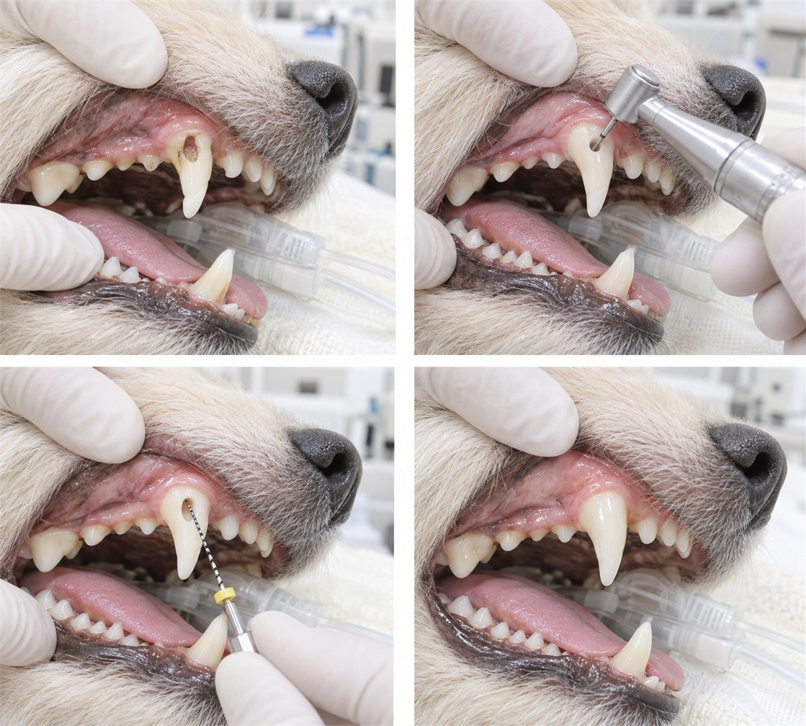
신경치료
-
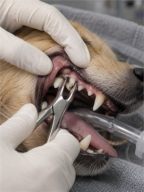
발치
-
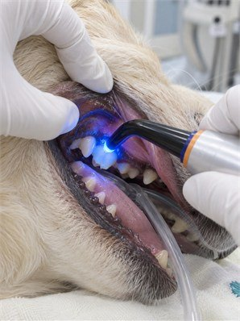
레진
-
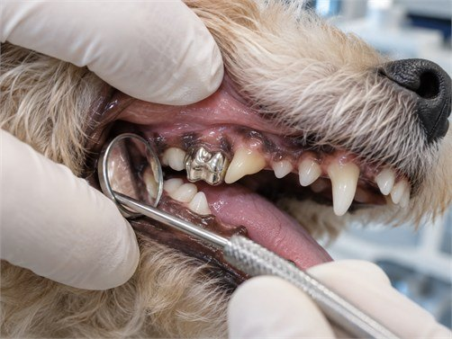
크라운
정밀영상센터 안내
최상의 의료 서비스를 전하기 위해 온 힘을 기울이고 있습니다.

정밀영상센터 안내란?
반려동물은 어디가 아픈지, 어떻게 아픈지 증상을 면밀하게 표현할 수 없습니다.
그렇기 때문에 영상검사는 진단에 있어 중요한 바탕이 됩니다.
MRI·CT센터는 최고의 1.5T MRI와 저선량 다중채널 CT 장비를 갖추고 있으며, 영상의학 전공의 의료진께서 면밀한 진단과 최상의 의료서비스를 전하기 위해 온 힘을 기울이고 있습니다.
MRI 진단 : 디스크 신경 종양 등
-

간 종양
-

경추 디스크
-

맥락총 종양
-

비강 종양
-

요추 디스크
-

췌장 종양
CT 진단 : PSS·골격 구조 등
-

간외성 간문맥전식닥락 (PSS)
-

뇌 혈관 평가 (3D TOF MRA)
-

뇌수두증 (Hydrocephalus)
-

뇌수막염 (MUE)
-

뇌수막종 (Meningioma)
-

뇌출혈 (Hemorrhagic Stoke)
-

복부 외상
(Hepatic laceration, Hemorrhage) -

중이염
-

척추 외상
-

폐 전이
-

하악골절
-
흉부 외상
(피하기종, 기흉, Lung Contusion)
DFO CT
-

정방향
-

상하방향
하악골절 CT
-

정방향
-

상하방향
심장·신장센터
다양한 검사를 거쳐 면밀한 진단과 치료를 받을 수 있도록 최선을 다합니다.
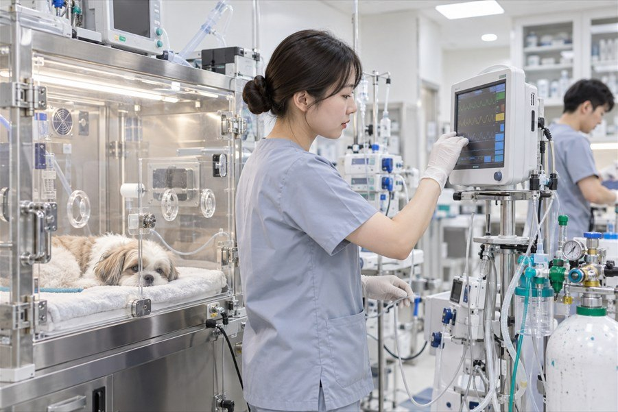
심장·신장센터란?
심장은 반려동물의 생명활동에 필수적인 산소와 영양분이 풍부한 혈액을
온몸으로 공급해주는 펌프 역할을 하여 생명유지에 아주 중요한 바탕이 됩니다.
이런 심장에 문제가 발생한 경우 다른 장기들도 영향을 받게되고 생명을 위협하는 치명적인 결과를 초래할 수 있습니다.
24시 온율담동물의료센터의 심장센터에서는 심장질환으로 고통받는 반려동물들이 다양한 검사를 거쳐 면밀한 진단과 치료를 받을 수 있도록 온 힘을 기울이고 있습니다.
치료 종류
-
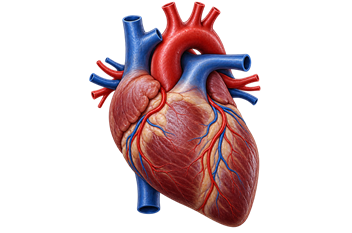
심혈관 내과적 치료 / 심혈관 수술적 치료
심장 질환으로 나타날 수 있는 중상으로는 운동불내성, 기절, 복부팽만, 호흡곤란, 기침, 청색증이 발생할 수 있습니다.
심장질환으로는 동맥관개존증(PDA), 폐동맥/대동맥 판막 협착증(PS/AS), 심실/심방 중격 결혼증(VSD/ASD),
심장사상충 감염, 이첨판막 폐쇄부전증(MVI), 삼첨판막 폐쇄부전증(TVI), 비대성 심근병증(HCM), 제한적 심근병증(RCM), 확장성 심근병증(DCM), 심장종양, 심내막염 등으로 나뉘게 됩니다.
다양한 심혈관계 질환의 진단을 위해 청진, 흉부방사선 촬영, 혈압측정, 심장초음파, 혈액검사, 심장 바이오마커 검사,
CT촬영 및 영상진단센터, 내과진료센터, 외과수술센터의 협진을 거쳐 면밀한 진단 및 치료를 시행하고 있습니다. -
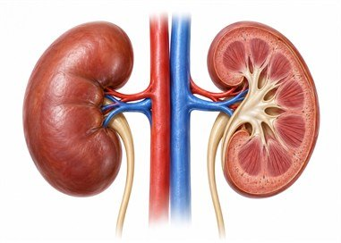
신장 관련 질환 치료
신장 및 비뇨기계 질환은 체내 노폐물을 배설하고 산염기 및 전해질의 항상성을 유지하는 중요한 기관인 신장, 요관, 방광, 요도 등에 이상이 생기는 것으로, 특히 신장의 손상은 비가역적인 반응으로 평소 관리가 매우 중요합니다.
신장 및 비뇨기계 질환으로 나타날 수 있는 증상으로는 다음 및 다뇨, 배뇨곤란, 탈수, 식욕부진, 구토, 설사, 기력저하, 구취, 빈혈, 허리 및 복부 통증, 발작이 발생할 수 있습니다.
신장 및 비뇨기계 질환으로는 급성신부전, 만성신부전, 요관결석, 요도결석, 방광결석, 고양이 하부 요로 질환(FLUTD), 신우신염, 수신증, 농신증, 이소성 요관, 사구체신염, 신장종양 등으로 나뉘게 됩니다.
다양한 신장 및 비뇨기계 질환의 진단을 위해 신체검사, 청진, 방사선 촬영, 혈압측정, 복부초음파, 혈액검사, 신장 바이오마커 검사, 소변검사, CT촬영 등을 시행합니다.
특히, 노령동물에서 신장 및 비뇨기계질환은 다른 장기에서도 동시 다발적으로 진행될 수 있으므로 복합질환의 특징을 파악하기 위해 영상진단센터, 내과진료센터, 외과수술센터의 협진을 거쳐 면밀한 진단 및 치료를 시행하고 있습니다.
중환자집중센터
최상의 의료 서비스를 전하기 위해 온 힘을 기울이고 있습니다.
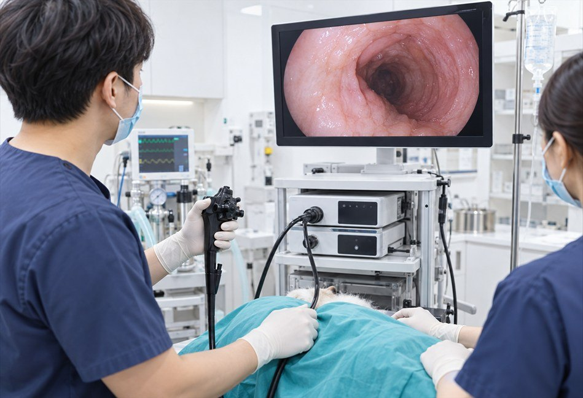
중환자집중센터란?
면밀한 모니터링이 필요한 중증환자 / 만성 중증질환으로 장기 치료가 필요한 환자 / 대규모 수술 후 집중적인 회복치료가 필요한 환자 등 24시간 체제의 강력하고 집중적인 치료, 응급/중환자 케어를 위해 ICU 시설을 운영하고 있습니다. 아울러 주치의 및 담당 테크니션 배정 각 분과별 협진 시스템을 거쳐 중증/복합질환 환자의 생존률을 증진시키기 위해 온 힘을 기울이고 있습니다.
ICU
-
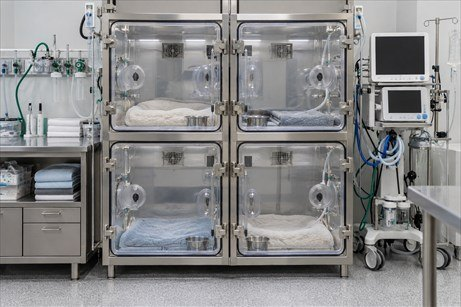
ICU 입원장
24시 온율담 중환자케어센터에서는 ICU 입원실을 수의사와 테크니션이 24시간 살피며 상태를 확인하고 있습니다.
ICU입원장을 다수 보유하고 있으며, 전문인력과 고도화된 장비를 거쳐 세심하고 면밀하게 환자 상태를 파악하여
신속하고 면밀한 처치가 이루어집니다.
최소침습수술센터
절개 범위를 줄여 빠르고 안정적인 회복을 돕습니다.
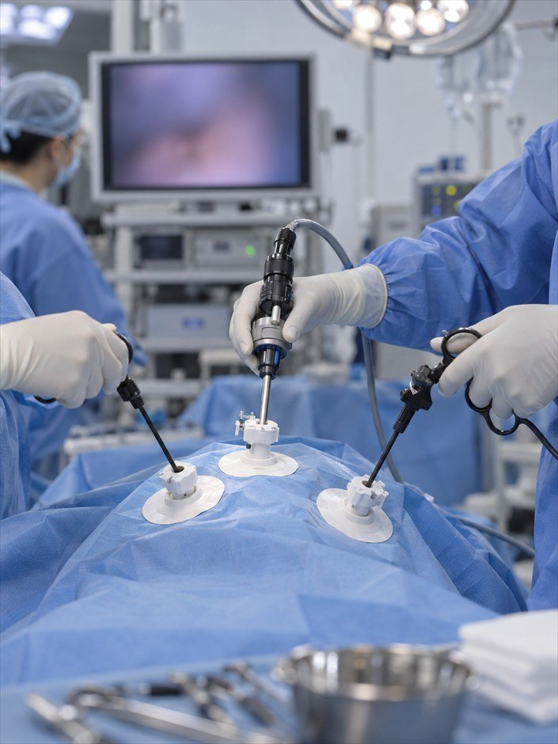
최소침습수술센터란?
최소침습수술센터는 수술진행시 절개부위를 최소한으로 하여
환자의 회복을 보다 빠르고 원활하게 유도하기 위한 목적으로 운영되고 있습니다.
현재 복강경을 이용한 비개복 복강장기 수술, 관절경을 이용한 관절질환 치료,
그 밖에 정밀 내시경 등 고도화된 장비를 활용해 부담이 적은 수술을 진행하며,
신속하고 비침습적인 치료를 하기 위해 힘쓰고 있습니다.
내시경
-
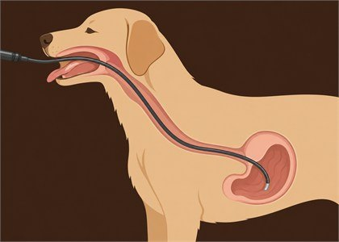
위내시경
-
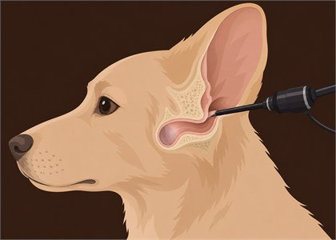
이도 내시경
-
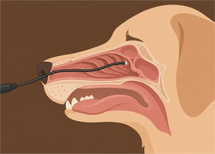
비강 내시경
-
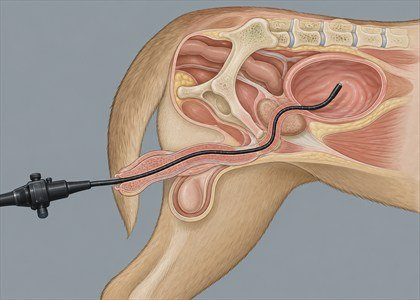
요도 내시경
-
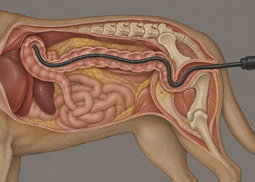
대장 내시경
-
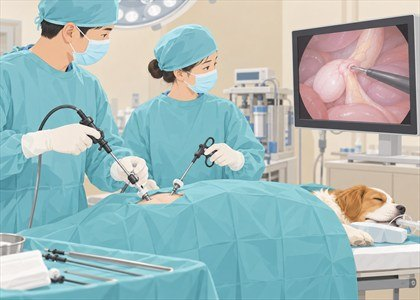
복강경 / 중성화 수술
통합재활센터 안내
최상의 의료 서비스를 전하기 위해 온 힘을 기울이고 있습니다.
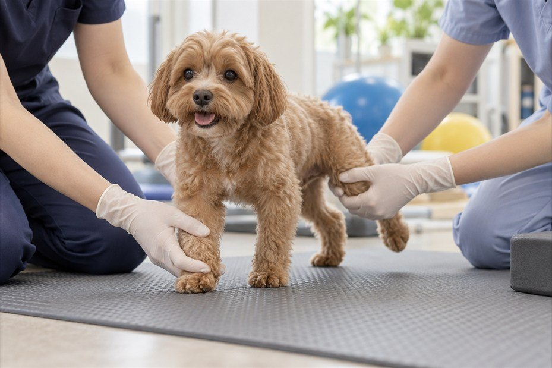
통합재활센터 안내란?
수술 후, 수술 전, 비수술적 한방 치료 및 재활 운동 치료 등을 거쳐 수술의 성공률을 높이고
가능한 한 정상에 가까운 생활을 할 수 있도록 회복시키는데 그 목적을 두고 있습니다.
24시 온율담동물의료센터에는 한방수의침술전문가(CVA) 과정과 미국반려동물재활 치료 전문자격인 CCRT 자격을 취득하신 원장들의 주도하에 체계적이고 전문적인 재활치료를 시행하고 있습니다.
치료 종류
-
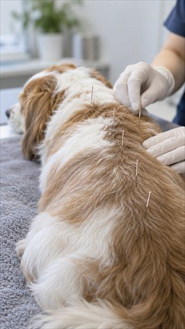
침치료
-
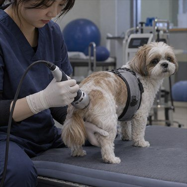
레이저치료
-
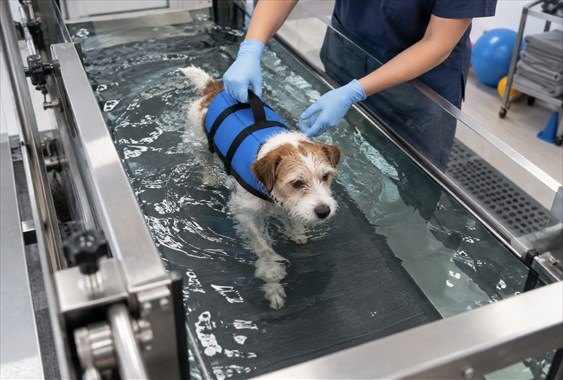
체외충격파
-
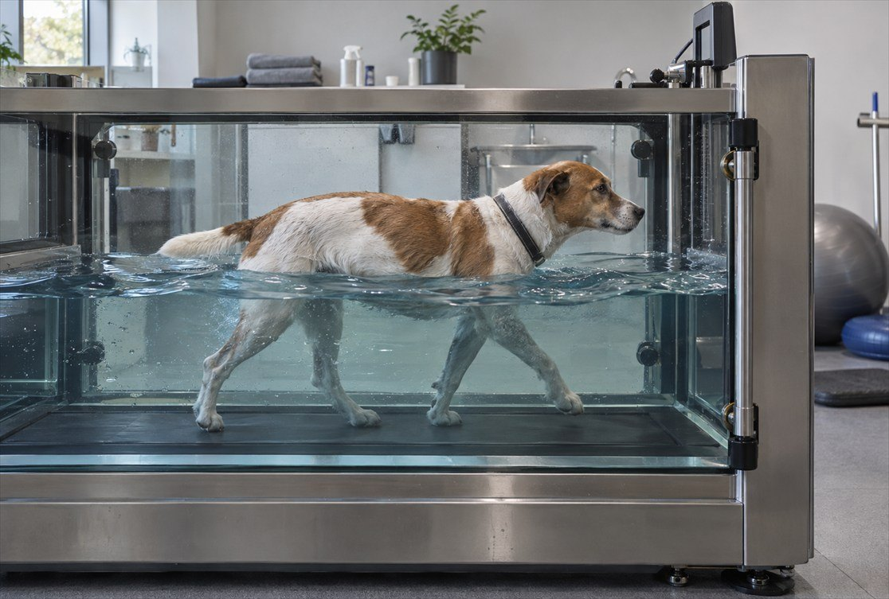
수중재활
-
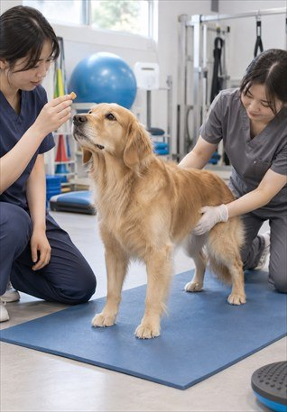
운동치료
재생의학센터
최상의 의료 서비스를 전하기 위해 온 힘을 기울이고 있습니다.
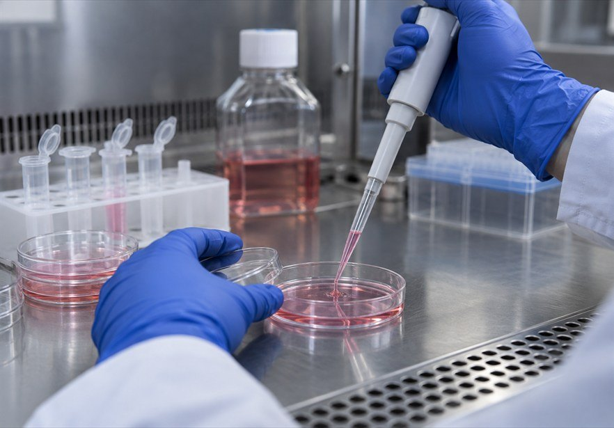
재생의학센터란?
자가 혹은 동종 타가의 줄기세포를 활용하여 다양한 질병을 진료하고 있습니다. 줄기세포는 아직 분화가 일어나지 않은 미분화세포로서 여러 종류의 기능세포로 분화가 가능하여 스스로 자기와 동일한 형태의 세포로 복제될 수 있고, 정맥 투여시 손상된 부위를 스스로 찾아가 치료에 도움을 줄 수 있습니다.
Special
질환별 줄기세포
치료 비율
24시 온율담동물의료센터의 줄기세포 치료를 진행한 질환별 분포도입니다.
-
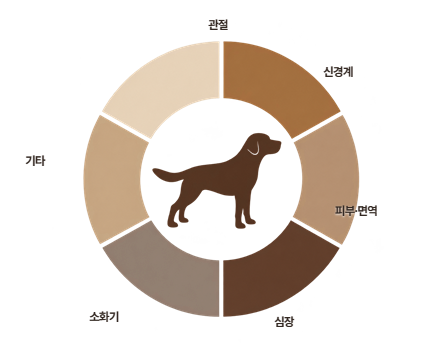
강아지 줄기세포 치료 비율
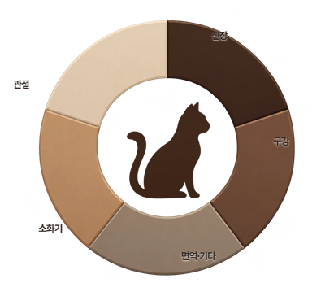
고양이 줄기세포 치료 비율